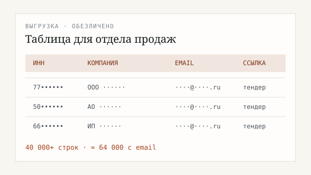

Кейс · 01
Контакты заказчиков с тендерных площадок
Для отдела продаж, производства и поставщиков в B2B: нужны не «ссылки на закупки», а таблица для работы — какая компания искала товар, её ИНН, email, ссылка на тендер.
- В Excel по нише
- 40 000+ строк
- В рабочей базе
- 100 000+ тендеров
- С email
- ≈ 64 000

Что сделал
Собрал закупки с площадки, достал контакты с карточки и дополнительно нашёл email компании по ИНН. Если сбор обрывается — продолжается с того же места, без потери уже найденного. Отдельные выгрузки делались и под другие запросы заказчика.
Что на выходе
- Excel: компания, ИНН, отрасль, ссылка, email
- Две стадии: площадка + поиск почты по ИНН
- Можно продолжить после обрыва
- Объём — десятки тысяч строк, готово к загрузке в CRM
Сами таблицы с живыми адресами не публикую — только обезличенные цифры и формат результата.
Нужна база контактов по вашим тендерам или региону? Опишите задачу →